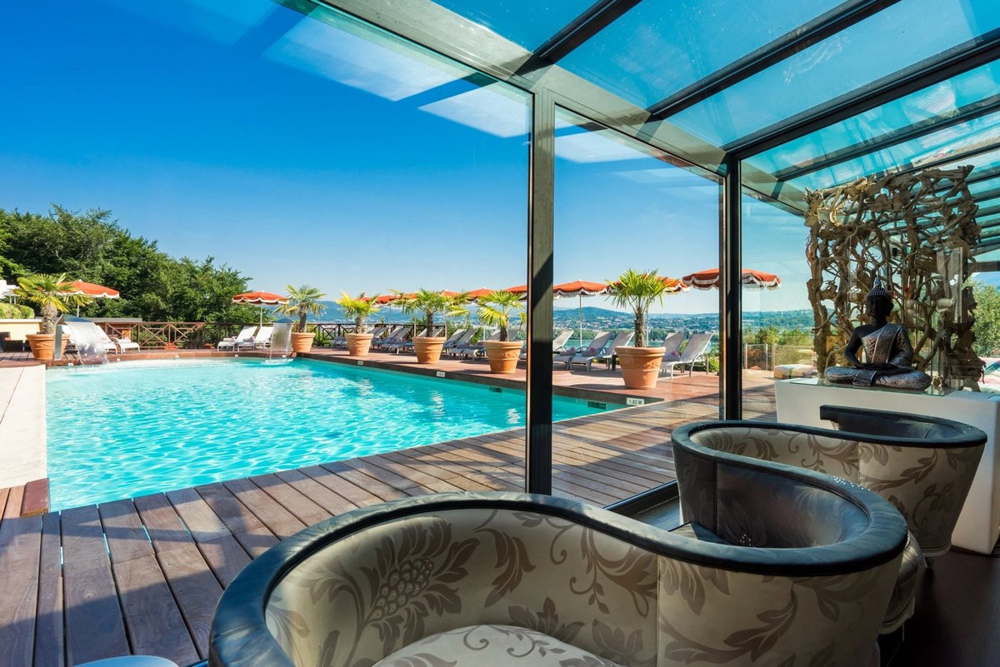
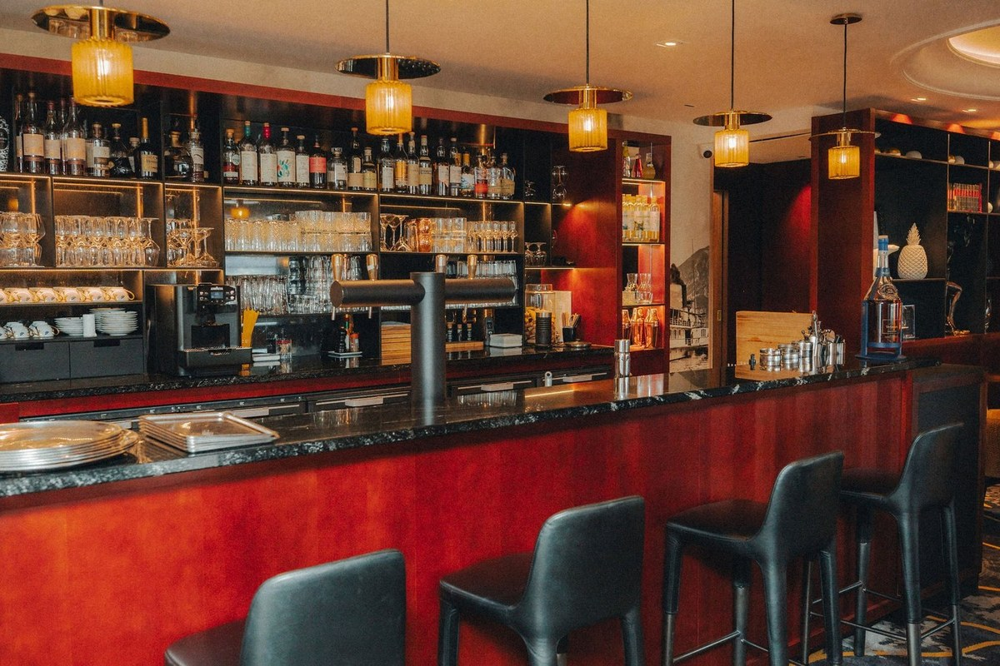

Meilleurs hôtels à Annecy : 8 adresses classées en 2026
Six étoiles au Guide MICHELIN sur vingt kilomètres de rives, deux étoiles vertes, et le
plus grand spa de la ville qui n'est pas celui qu'on croit.
Par Swann Bertaud, rédacteur hôtellerie de luxe✺Publié le 27 août 2026✺15 min de lecture
La piscine du spa de l'Impérial Palace. Photo : Impérial Palace, site officiel,
A. Badot.
L'essentielTrois adresses, trois raisons de venir
Les Trésoms Lake and Spa Resort, 9,2/10 : la seule maison d'Annecy à
réunir un spa complet et une table étoilée, La Rotonde des Trésoms, une étoile au
Guide MICHELIN depuis 2021.
Auberge du Père Bise, Jean Sulpice, Talloires, 9,0/10 :
deux étoiles et une étoile verte, 5 étoiles, Relais & Châteaux depuis 1973. La
table de référence du lac.
Impérial Palace, 8,8/10 : l'adresse historique du bord du lac, son parc,
son casino et son spa. La plus complète pour ne pas quitter l'hôtel.
Le lac d'Annecy concentre, sur une vingtaine de kilomètres de rives, une densité
gastronomique que peu de régions françaises peuvent afficher : six étoiles au Guide
MICHELIN réparties sur trois tables, dont deux étoiles vertes. Nous
avons classé huit hôtels par le Score LMHS sur 10 et l'Indice Lac sur
5, notre indice thématique pour cette page.
Notre sélection : les 8 meilleurs hôtels d'Annecy et du lac
01

Les Trésoms Lake and Spa Resort, spa et table étoilée 9,2/10
15 boulevard de la Corniche, 74000 Annecy · Indice Lac 4,8/5
À partir de 109 €/nuit, la fourchette montant très haut en saison.
Perchée sur la Corniche, la maison regarde le lac depuis la hauteur plutôt que depuis la rive, ce qui lui donne le meilleur cadrage de ce palmarès. C'est surtout la seule adresse d'Annecy à réunir sous un même toit un spa complet et une table distinguée. La Rotonde des Trésoms, dirigée par le chef Éric Prowalski, est étoilée au Guide MICHELIN depuis 2021. La maison compte 52 chambres, dont 4 suites, et son MontSpa aligne hammam, sauna, jacuzzi, balnéothérapie et cabines de soin. Deux piscines, l'une couverte et l'autre extérieure, ainsi qu'un court de tennis, complètent une offre plus étendue que ne le laisse deviner la façade. L'établissement affiche par ailleurs des panneaux photovoltaïques et une production solaire d'eau chaude, ce qui reste rare à ce niveau. Le bémol : la maison ne publie pas le détail de ses conditions d'accès au spa, et le tarif d'entrée annoncé ne dit pas grand-chose d'une fourchette qui grimpe fortement de juin à août. Pour les couples, les séjours bien-être et qui veut dîner sans reprendre la voiture.
52 chambres dont 4 suites · La Rotonde, 1 étoile MICHELIN depuis 2021 · MontSpa · Deux piscines et tennis ·
Site officiel →
02
Auberge du Père Bise, Jean Sulpice, la table de référence 9,0/10
À partir de 494 €/nuit selon les tarifs affichés par la maison.
Talloires est le village des gastronomes du lac, et l'Auberge du Père Bise en est la raison. La maison est Relais & Châteaux depuis 1973, et sa table, sous la direction de Jean Sulpice, est distinguée de deux étoiles au Guide MICHELIN ainsi que d'une étoile verte, celle qui récompense la démarche durable. La cuisine puise dans le territoire savoyard : poissons du lac, herbes, produits de montagne. Le cadre, au bord de l'eau, est le plus beau de ce classement. Le bémol : c'est aussi le plus cher, avant même de passer à table, et la réservation au restaurant se prend longtemps à l'avance. Pour les gastronomes, et pour une occasion plutôt qu'un week-end de routine.
2 étoiles MICHELIN et 1 étoile verte · Relais & Châteaux depuis 1973 · Bord de lac à Talloires ·
Site officiel →
03

Impérial Palace, l'adresse historique du bord du lac 8,8/10
À partir de 128 €/nuit, avec de forts écarts saisonniers.
C'est l'hôtel qui figure sur les cartes postales d'Annecy depuis un siècle. Façade Belle Époque, parc, accès direct au lac : l'Impérial Palace joue le classicisme sans s'en excuser. La maison compte 90 chambres et 14 suites, ce qui en fait de loin la plus grande de ce palmarès, et la seule à proposer sur place un casino, un spa avec piscine intérieure et plusieurs restaurants. C'est l'adresse pour qui veut tout trouver sans reprendre la voiture. Le bémol : la taille se paie en anonymat, l'établissement est classé 4 étoiles et non 5 malgré son nom, et les tarifs de juillet et août montent vite. Pour les familles, les séjours longs et qui cherche des services complets.
90 chambres et 14 suites · Spa et piscine intérieure · Casino · Parc et accès au lac ·
Site officiel →
04
Black Bass Hotel, le contemporain à Sévrier 8,6/10
Sévrier, rive ouest du lac · 5 étoiles · Indice Lac 4,5/5
À partir de 201 €/nuit.
À Sévrier, sur la rive ouest, le Black Bass prend le contrepied des maisons historiques du lac. Vingt-cinq chambres seulement, lignes nettes, bois clair, balcons ouverts sur l'eau : c'est un 5 étoiles qui refuse le registre palace. La maison réinterprète le chalet plutôt que de le reproduire, et l'échelle réduite donne une tranquillité que les grandes adresses du bord de lac ne peuvent pas offrir en saison. Le bémol : vingt-cinq clés, donc des disponibilités qui partent tôt ; et moins de services qu'un établissement de cent chambres, ce qui se ressent au tarif. Pour les couples, les séjours courts et qui préfère le calme au prestige.
25 chambres · 5 étoiles · Rive ouest, à Sévrier · Piscine ·
Site officiel →
05
Rivage Hôtel & Spa, le plus grand spa d'Annecy 8,4/10
Voilà l'information que la plupart des classements manquent : le plus grand spa d'Annecy n'est pas celui d'un palace historique, c'est celui du Rivage. La maison, ouverte le 1er juillet 2021 à Annecy-le-Vieux, revendique plus de 1 000 m² de spa, et se présente comme le plus vaste de la ville. Elle compte 123 chambres et suites, la majorité avec balcon, face au lac et aux Alpes. Tout est récent, lumineux, et le rapport prestations-prix est meilleur que dans les maisons centenaires. Le bémol : c'est aussi une adresse sans passé, dont l'architecture ne fera rêver personne, et Annecy-le-Vieux n'est pas la vieille ville. Pour les séjours bien-être, les familles et qui préfère le confort neuf au cachet.
123 chambres · Spa de plus de 1 000 m², le plus grand d'Annecy · Ouvert en juillet 2021 ·
Site officiel →
06
Palace de Menthon, la vue depuis la rive est 8,2/10
À Menthon-Saint-Bernard, sur la rive est, le Palace de Menthon offre l'un des plus beaux cadrages du lac, avec le château de Menthon en surplomb et les Dents de Lanfon en fond. C'est un 5 étoiles de registre classique, avec parc, terrasse et restaurant tournés vers l'eau. La maison propose aussi une villa privée, format utile pour une famille ou un groupe qui veut de l'espace sans louer une maison entière. Le bémol : le classicisme du décor n'a pas la fraîcheur des adresses récentes, et la rive est impose la voiture pour rejoindre Annecy. Pour les familles, les séjours au calme et qui vient d'abord pour la vue.
5 étoiles · Rive est, à Menthon-Saint-Bernard · Villa privée · Parc et terrasse ·
Site officiel →
07
Splendid Hotel Lac d'Annecy, le centre-ville à prix tenu 8,0/10
À partir de 97 €/nuit, le tarif d'entrée le plus bas de ce palmarès.
Le Splendid a le meilleur emplacement du classement pour qui vient visiter Annecy plutôt que le lac : quai Eustache Chappuis, à la charnière entre le Pâquier et la vieille ville, tout se fait à pied. Soixante-sept chambres, rattachées depuis peu à la Handwritten Collection, dans un registre Belle Époque discret. Un sauna complète l'offre bien-être, sans prétendre au spa complet. C'est l'adresse du rapport emplacement-prix, et elle assume de ne pas jouer dans la catégorie des palaces. Le bémol : pas de spa véritable, pas de restaurant gastronomique, et un quartier animé en saison. Pour les séjours courts, les visiteurs de la vieille ville et les budgets tenus.
67 chambres · Handwritten Collection · Sauna · À pied de la vieille ville ·
Site officiel →
08
Abbaye de Talloires, le monastère du bord de l'eau 7,8/10
À partir de 149 €/nuit, avec de forts écarts saisonniers.
Une ancienne abbaye bénédictine, au bord de l'eau, devenue hôtel : le bâti fait ici tout le travail. Cloître, voûtes, jardin descendant vers le lac, et une atmosphère que ni le neuf ni le palace ne savent produire. La maison compte trente-sept chambres et un spa de 200 m², avec bain à remous, sauna, hammam, douche expérience et salle de sport, dans un registre bois et lumière basse. Elle appartient à la collection Teritoria. Le bémol : le bâti historique impose des chambres très inégales d'une catégorie à l'autre, et la fourchette de prix est la plus large du palmarès. Pour les couples, les séjours au calme et qui vient chercher un lieu plutôt qu'un service.
37 chambres · Ancienne abbaye bénédictine · Spa 200 m² · Teritoria · Bord de lac à Talloires ·
Site officiel →
Tableau comparatif : hôtels du lac d'Annecy 2026
Hôtel
Étoiles
Prix/nuit
Score LMHS
Indice Lac
Table étoilée
Spa
Rive
Pour qui
Les Trésoms
n. c.
109 €+
9,2/10
4,8/5
La Rotonde, 1 étoile
MontSpa, 2 piscines
Corniche
Spa et table
Auberge du Père Bise
5
494 €+
9,0/10
4,7/5
2 étoiles et 1 verte
Non
Talloires
Gastronomes
Impérial Palace
4
128 €+
8,8/10
4,6/5
Non
Oui, piscine
Annecy
Familles, services
Black Bass Hotel
5
201 €+
8,6/10
4,5/5
Non
Oui
Sévrier
Couples, calme
Rivage Hôtel & Spa
4
131 €+
8,4/10
4,4/5
Non
Plus de 1 000 m²
Annecy-le-Vieux
Bien-être, familles
Palace de Menthon
5
145 €+
8,2/10
4,3/5
Non
Non
Menthon
Vue, familles
Splendid Hotel
4
97 €+
8,0/10
4,1/5
Non
Sauna
Annecy centre
Budget, vieille ville
Abbaye de Talloires
4
149 €+
7,8/10
4,0/5
Non
200 m²
Talloires
Couples, patrimoine
Classement par Score LMHS. Les Trésoms se présente comme Lake and Spa Resort
et ne publie pas de classement en étoiles, d'où la mention « n. c. ». Tarifs, capacités et distinctions
relevés le 27 août 2026 sur les sites officiels et auprès du Guide MICHELIN.
Protocole LMHS : comment nous avons classé ces hôtels
L'Indice Lac, noté sur 5, est un indice thématique propre à cette page. Il
synthétise cinq dimensions : qualité du rapport à l'eau (vue, accès, cadrage),
ancrage savoyard, table, bien-être et
échelle de la maison, une petite adresse et un cent-chambres ne proposant pas
la même expérience du lac. Le Score LMHS sur 10 évalue la globalité, réserves
comprises, et relève de la grille LMHS Destination.
Ce palmarès est documentaire. Nous n'avons pas effectué de séjour de
contrôle pour cette édition. Catégories, capacités, tables, distinctions et équipements ont été
relevés le 27 août 2026 sur les sites officiels des établissements et auprès du Guide MICHELIN.
Aucun partenariat commercial, aucune affiliation.
Annecy : ce qu'il faut savoir avant de réserver
Six étoiles MICHELIN sur trois tables. Le Clos des Sens, à
Annecy-le-Vieux, en détient trois, ainsi qu'une étoile verte.
Fondée par Laurent Petit, la maison est aujourd'hui codirigée par Franck Derouet
et Thomas Lorival, précision que beaucoup d'articles n'ont pas encore intégrée.
L'Auberge du Père Bise en détient deux, plus une étoile verte
elle aussi. Et La Rotonde des Trésoms en détient une. Seules
les deux dernières sont adossées à un hôtel : le Clos des Sens est une table seule.
Choisir sa rive. Annecy et Annecy-le-Vieux pour la ville, les services et
la vieille ville à pied. Talloires, sur la rive est, pour la gastronomie et le
calme. Sévrier et la rive ouest pour la lumière du soir et l'intimité. Les
trois demandent des logiques de séjour différentes, et la voiture dès qu'on quitte Annecy.
Saisonnalité. Juillet et août concentrent la fréquentation et les tarifs
hauts, avec des réservations à prendre plusieurs mois à l'avance. Mai, juin, septembre
et octobre offrent le meilleur compromis, le lac restant baignable jusqu'en septembre.
L'hiver ouvre une autre lecture, avec les stations à moins d'une heure.
Selon nos relevés 2026, Les Trésoms Lake and Spa Resort obtient la
meilleure note, 9,2/10 : c'est la seule maison d'Annecy à réunir un spa
complet et une table distinguée, La Rotonde des Trésoms, étoilée au Guide
MICHELIN depuis 2021. Pour la gastronomie pure, l'Auberge du Père Bise à
Talloires (9,0/10) et ses deux étoiles restent la référence du lac.
Quel hôtel du lac d'Annecy a le plus grand spa ?
Contrairement à ce qu'on lit souvent, ce n'est pas un palace historique : c'est le
Rivage Hôtel & Spa, à Annecy-le-Vieux, ouvert en juillet 2021, qui
revendique plus de 1 000 m² et se présente comme le plus vaste de la
ville. L'Impérial Palace dispose d'un spa avec piscine intérieure, les
Trésoms du MontSpa avec piscine et hammam, et l'Abbaye de
Talloires d'un spa de 200 m².
Combien de restaurants étoilés autour du lac d'Annecy ?
Six étoiles sur trois tables, dont deux étoiles vertes.
Le Clos des Sens, à Annecy-le-Vieux, en détient trois et
une étoile verte ; fondé par Laurent Petit, il est aujourd'hui codirigé par Franck Derouet
et Thomas Lorival. L'Auberge du Père Bise, à Talloires, en détient
deux et une étoile verte, sous la direction de Jean
Sulpice. La Rotonde des Trésoms en détient une.
Seules les deux dernières sont adossées à un hôtel.
L'Impérial Palace est-il un hôtel 5 étoiles ?
Non, il est classé 4 étoiles, malgré son nom et son statut d'adresse
historique du lac. C'est en revanche le plus grand établissement de ce palmarès, avec
90 chambres et 14 suites, et le seul à proposer sur place un casino, un
spa avec piscine intérieure, plusieurs restaurants et un accès direct au lac. Les
5 étoiles du classement sont l'Auberge du Père Bise, le Black Bass Hotel
et le Palace de Menthon.
Faut-il loger à Annecy ou sur les rives du lac ?
Cela dépend de ce que vous venez chercher. Annecy et Annecy-le-Vieux
pour la vieille ville à pied, les services et la vie urbaine : le Splendid, l'Impérial
Palace, le Rivage et les Trésoms. Talloires, rive est, pour la
gastronomie et le calme : le Père Bise et l'Abbaye. Sévrier, rive ouest,
pour l'intimité : le Black Bass. Dès que vous quittez Annecy, la voiture devient
nécessaire.
Quelle est la meilleure période pour réserver à Annecy ?
Mai, juin, septembre et octobre offrent le meilleur compromis entre
climat, tarifs et fréquentation, le lac restant baignable jusqu'en septembre. Juillet et
août concentrent la haute saison, avec des tarifs au plus haut et des réservations à
prendre plusieurs mois à l'avance. L'hiver propose une tout autre lecture du lac, avec les
stations de ski à moins d'une heure.
Le mot de SwannLe lac se mérite, l'hôtellerie moins
Annecy a un problème que ses concurrents lacustres n'ont pas : elle est trop belle pour avoir besoin de bien faire. Le lac remplit les chambres tout seul de juin à septembre, et cela se voit sur les tarifs comme sur le service en pleine saison. Ce qui rachète tout, c'est la table. Six étoiles Michelin sur vingt kilomètres de rives, dont deux étoiles vertes, voilà une densité que ni le Bourget ni le Léman français n'atteignent. Une chose m'a frappé en établissant ce classement : le plus grand spa d'Annecy n'appartient à aucun palace centenaire, mais à une maison ouverte en 2021. Le lac a beau être immuable, l'hôtellerie qui le borde ne l'est pas.
Swann Bertaud, rédacteur hôtellerie de luxe
Méthode et sources
8 hôtels du lac d'Annecy classés par le Score LMHS sur 10, issu de la
grille LMHS Destination employée dans nos classements par ville, et par l'Indice Lac
sur 5, indice thématique propre à cette page : rapport à l'eau, ancrage savoyard,
table, bien-être et échelle de la maison. Aucun séjour de contrôle n'a été effectué
pour cette édition. Catégories, capacités, tables, distinctions et équipements
relevés le 27 août 2026 sur les sites officiels des établissements et auprès du Guide
MICHELIN. La codirection actuelle du Clos des Sens et l'étoile verte du Père Bise ont été
recoupées auprès de sources professionnelles. Aucun partenariat commercial, aucune
affiliation. Photographies : sites officiels des établissements.
8 adressesIndice Lac /5Sans séjour de contrôle0 partenariat